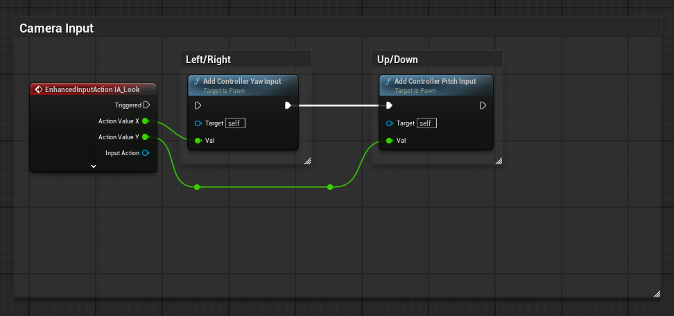
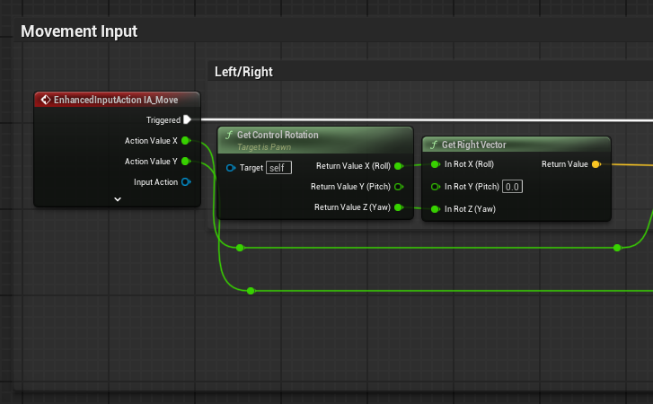
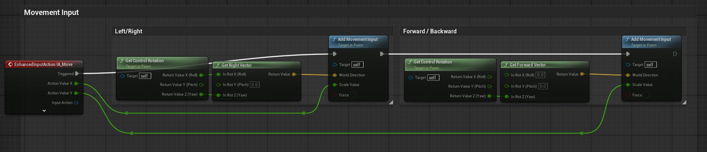
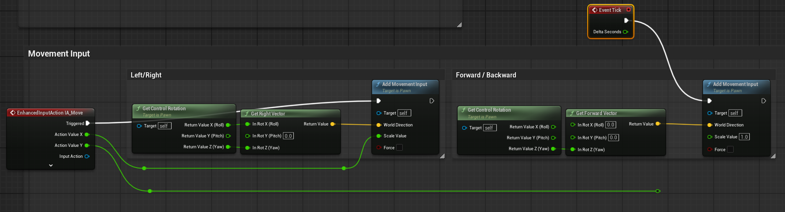

언리얼 엔진 버전: 5.5
프로젝트 : 3인칭 시점
플레이어 컨트롤을 제어 하려면 BP_ThirdPersonCharacter 블루프린트 클래스를 수정 합니다.
Get Player Controller란
언리얼 엔진에서는 플레이어를 두 가지 요소로 나누어서 관리합니다.
- Pawn 또는 Character (육체): 화면에 보이고, 팔다리를 움직이고, 총에 맞으면 데미지를 입는 물리적인 아바타입니다.
- Player Controller (영혼/뇌): 키보드나 마우스, 게임패드의 입력을 받아들이고 화면(UI)을 관리하는 보이지 않는 지휘자입니다.
예) 컨트롤러 방향 가져오기
대부분 상황에서 카메라는 컨트롤러를 따라가기 때문에 같은 것처럼 느껴집니다.
Get Player Controller → Get Control Rotation
핵심: Set Control Rotation = 플레이어 시점(컨트롤러 방향)을 회전시키는 것
카메라 회전 막기
IA_Look의 Triggered 핀에 연결된 하얀색 실행 선(Execution wire)을 지우면
또는 Camara Input 전체를 지우면
마우스나 게임패드(오른쪽 스틱)를 움직여도 더 이상 카메라 시점이 회전하지 않게 됩니다. 즉, 플레이어가 주변을 둘러보는 기능이 완전히 사라집니다.

옆으로 이동
시점 기준점 잡기 (Get Control Rotation)
- 캐릭터가 현재 어느 방향을 쳐다보고 있는지 알아야 합니다. Get Control Rotation 노드가 컨트롤러의 현재 회전값을 가져옵니다.
- 중요한 점: 여기서 반환된 회전값 중 Z (Yaw, 좌우 회전) 값만 빼서 사용합니다. X (Roll)와
Y (Pitch, 상하 회전)를 무시하는 이유는, 플레이어가 하늘을 보거나 땅을 쳐다본다고 해서 이동할 때 공중으로 떠오르거나
땅속으로 파고들면 안 되기 때문입니다. 오직 수평 방향의 회전 축만 가져옵니다.
오른쪽 방향 벡터 계산 (Get Right Vector)
- 앞서 구한 Z (Yaw) 회전값을 Get Right Vector에 넣어줍니다.
- 이 노드는 해당 회전값을 바탕으로 현재 쳐다보고 있는 방향 기준 90도 오른쪽을 가리키는 3D 방향 벡터(World Direction)를 계산해 냅니다.
핵심 개념 정리
- Get Control Rotation → 카메라 방향
- Get Right Vector → 그 방향 기준 “오른쪽 벡터”
- IA_Move 노드의 Action Value X값이 +1이면, 카메라 기준 오른쪽으로 캐릭터가 이동
- IA_Move 노드의 Action Value X값이 -1이면, 카메라 기준 왼쪽으로 캐릭터가 이동
- IA_Move 노드의 Action Value X값이 0이면, 멈춰있는 상태

앞으로 이동
- Get Forward Vector → 그 방향 기준 “Forward 벡터”
- IA_Move 노드의 Action Value Y값이 +1이면, 카메라 기준 앞으로 캐릭터가 이동
- IA_Move 노드의 Action Value Y값이 -1이면, 카메라 기준 뒤로 캐릭터가 이동
- IA_Move 노드의 Action Value Y값이 0이면, 멈춰있는 상태

자동으로 앞으로 이동
- IA_Move 노드의 Action Value Y핀을 Add Movement Input과 연결을 끊습니다.
- Scale Value을 1.0으로 설정합니다.
- Event Tick 노드로 틱마다 Forword Vector 방향으로 이동 합니다.

왜 Control Rotation을 쓰는가?
- 캐릭터 기준이 아니라 카메라 기준 이동을 만들기 위해
- 캐릭터가 이동 방향으로 회전하게 하려면 Character 설정에서: Orient Rotation to Movement = true
- 카메라 방향으로 몸을 고정하려면 Use Controller Rotation Yaw = true
- Get Control Rotation은 “지금 플레이어가 바라보고 있는 방향(카메라 방향)”을 가져오는 것입니다.
다음 설정시 Get Player Controller로 Set Control Rotation해도 캐릭터가 회전되는게 정상인가요?
- Use Controller Rotation Yaw = OFF
- Orient Rotation to Movement = ON
- Set Control Rotation 최소화로 설정
현재 설정하신 상태를 기준으로 보면, 캐릭터가 가만히 서 있을 때 회전한다면 비정상, 이동 중일 때 회전한다면 정상적인 현상입니다.
블루프린트에서 설정하신 옵션들이 어떻게 상호작용하는지 원리를 짚어볼게요.
- Use Controller Rotation Yaw = OFF: 캐릭터의 몸통(Actor Rotation)이 플레이어 컨트롤러의 시선(Controller Rotation)을 무조건 따라가지 않도록 분리하는 설정입니다.
- Orient Rotation to Movement = ON: 캐릭터가 현재 이동하고 있는 방향(가속도/Velocity)을 향해 자연스럽게 몸을 돌리게 만드는 설정입니다.
- Set Control Rotation: 플레이어 컨트롤러의 회전값(주로 카메라가 바라보는 방향)을 강제로 변경합니다.
|